As a PE teacher, effective questioning technique is an essential skill which serves numerous purposes. These include:
- developing listening skills;
- challenging and focusing thinking;
- communicating expectations;
- developing interest and curiosity;
- assessing knowledge and understanding;
- redefining tasks for pupils of differing abilities; and
- helping pupils learn subject-specific terminology in PE [1-4]
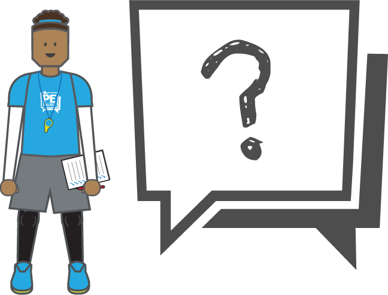
In PE literature the topic of questioning has generally focused on the categorization of convergent and divergent questions and the use of Bloom’s taxonomy for promoting higher-order thinking skills in students. Convergent (or closed) questions generally only have one correct answer which the students should have been taught e.g., “What is a backcourt violation?”. Whereas, divergent (or open) questions allow for more variable and detailed responses e.g., “How could you improve your performance?” [1-5].
Examples of convergent (closed) and divergent (open) questions
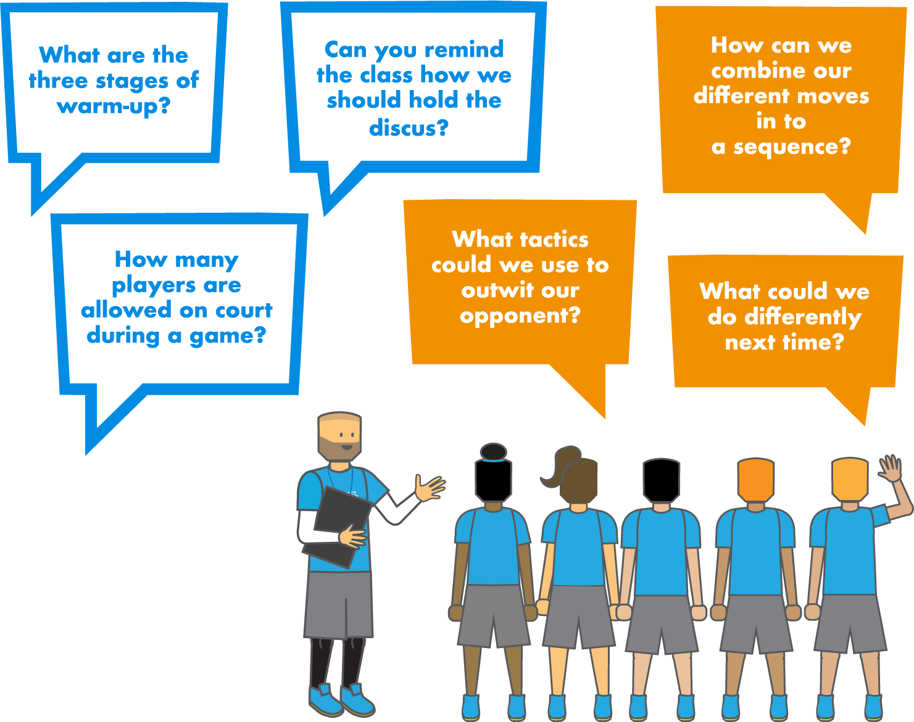
In terms of cognitive complexity, convergent questions usually require lower-order thinking skills whilst divergent questions can stimulate higher-order thinking [1]. Bloom’s taxonomy of educational objectives provide a useful framework for planning questions which promote higher-order thinking skills (table 1) [6].
Table 1: Bloom’s taxonomy of higher-order thinking skills used for questioning
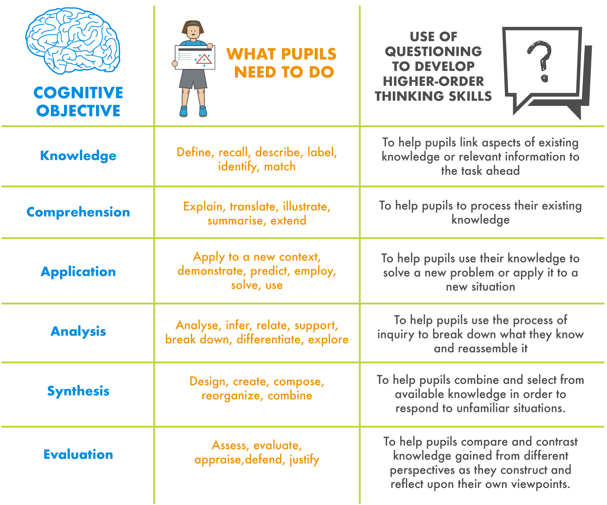
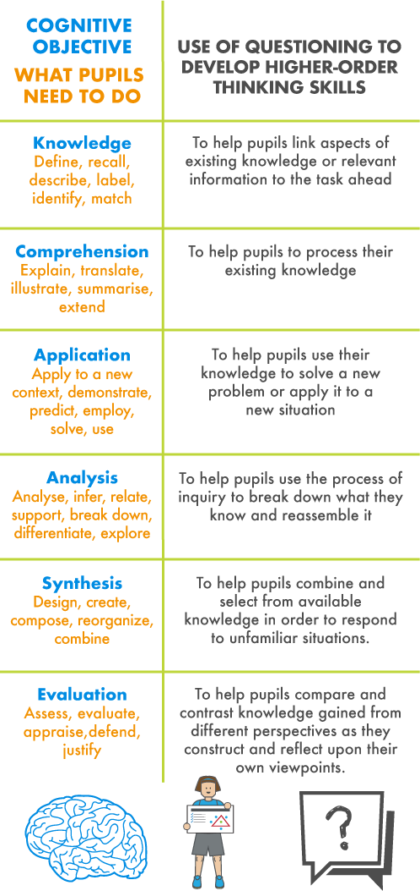
It is important as a PE teacher to plan for both convergent and divergent questions, as lower-order questions encourage students to recall factual knowledge such as recalling the location of muscles or specific teaching points. Whilst higher-order thinking questions might ask students to design a series of exercises that uses the specified muscle [1, 7]. It is worth noting that you should avoid asking too many divergent questions as they will slow the pace of the lesson [2]. Therefore, an effective strategy is to focus on the lesson objectives and plan a combination of questions (i.e., 2 closed, 1 open) which scaffold upon each other [8].
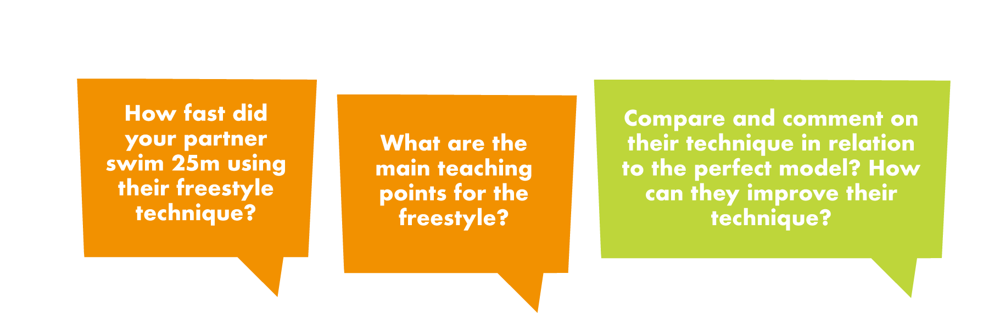
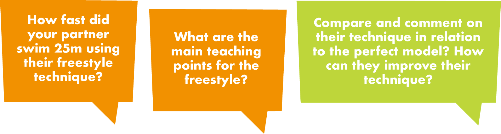
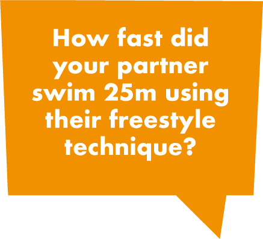
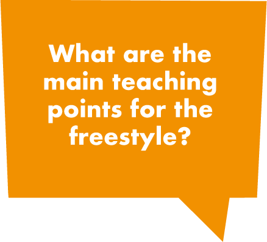
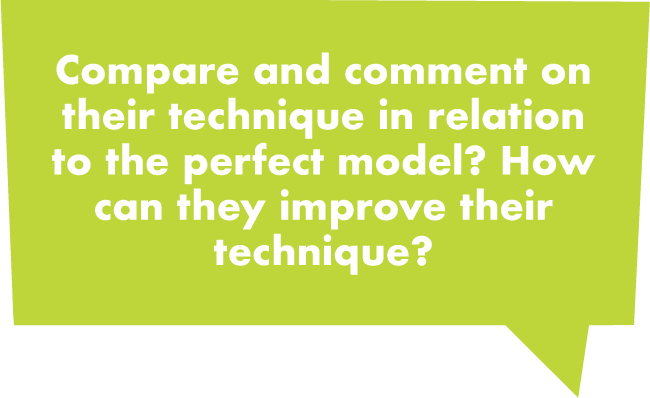
When asking such questions, Muijs and Reynolds (2011), suggests giving pupils at least 3 seconds thinking time for convergent/closed questions , and 15 seconds for divergent/open questions. One simple strategy to help engage pupils in questioning is 'Think, Pair, Share' - the teacher poses the question and gives pupils thinking time. Students then share their answers with a partner. Teacher then selects students to share answers with the class.
No matter how experienced or inexperienced you are as a teacher, asking effective questions is a skill that can be developed and fine-tuned throughout your teaching career [2]. If this is a skill that you wish to develop, we recommend that you include relevant questions in your lesson plans and familiarize yourself with the strategies and common mistakes below.
Table 2. Strategies for effective questioning and common mistakes [2, 3, 4]
.png)
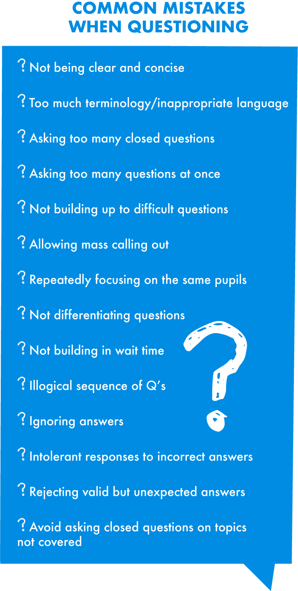
Questions can be asked at any stage during the lesson and doesn’t always have to be in front of the whole-class. A more beneficial approach is to circulate the group and ask individuals and small groups questions to serve a particular purpose, this may be: to focus attention; to invite inquiry; to assess knowledge and understanding; develop self- and peer-assessment; or to lead pupils to be mindful [4]. Bailey (2001) related question type to the various stages of the lesson (table 3).
Table 3: Types of questions related to stage of the lesson
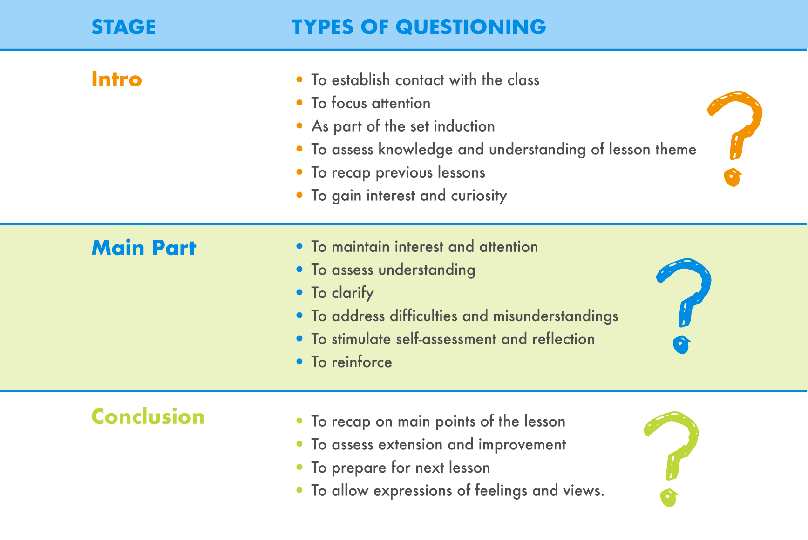
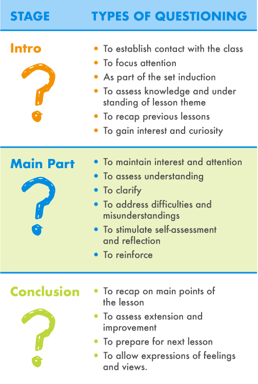
Therefore, in order to skillfully use and ask pertinent questions in Physical Education lessons it is important that you understand and plan a combination of open- and closed- questions which promote the appropriate level of thinking for the different abilities in your class. Print and laminate some of the tables and info above and place them on the wall behind your desk, and try spending 3-minutes thinking about and writing some questions for your lesson. Do this for a handful of lessons in a week and you will be surprised how much better your questioning becomes. But remember to keep it short and punchy!
References
- Newton, A. & Bowler, M. (2015) Assessment for and of learning in PE, In Capel, S. & Whitehead, M (Ed) Learning to Teach Physical Education in the Secondary School: A Companion to School Experience. 4th Edition. London: Routledge.
- Zwozdiak-Myers, P.N. (2015) Teacher as a researcher/reflective practitioner. In Capel, S. & Whitehead, M (Ed) Learning to Teach Physical Education in the Secondary School: A Companion to School Experience. 4th Edition. London: Routledge.
- Grout, H. & Long, G. (2009) Improving Teaching & Learning in Physical Education. Berkshire: Open University Press
- Bailey, R. (2001) Teaching Physical Education: A handbook for Primary and Secondary School Teachers. London: Kogan Page
- Torrance, H. & Pryor, J. (2001) Developing formative assessment in the classroom: using action research to explore and modify theory. British Educational Research Journal, 27(5): 615-31.
- Bloom, B., Englehart, M.D., Furst, E.J., Hil, W.H. and Krathwohl, D.R. (eds) (1956) Taxonomy of Educational Objectives: The Classification of Educational Goals, Handbook I: Cognitive Domain. New York: D.McKay.
- Good, T.L. & Brophy, J.E.(1991) Looking at Classrooms, Harper Collins: New York.
- Mawer, M (1995) The Effective Teaching of Physical Education, Harlow: Pearson Education.
- Muijs, D. & Reynolds, D. (2011) Effective Teaching: Evidence and Practice. 3rd Edition. London: Sage.